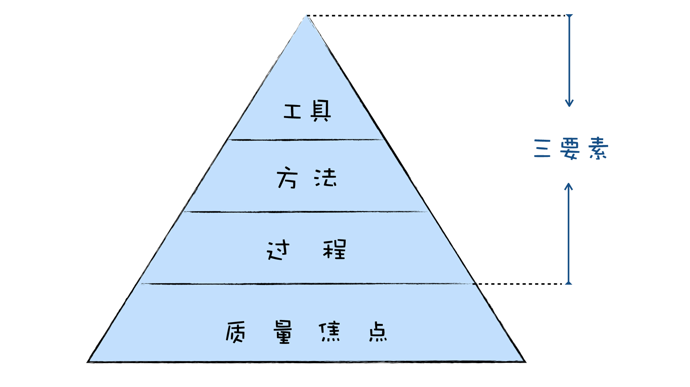
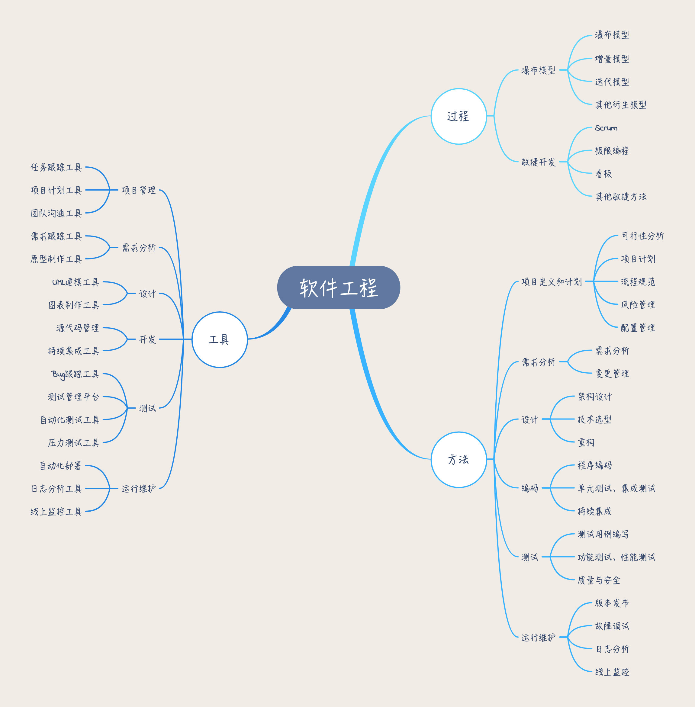
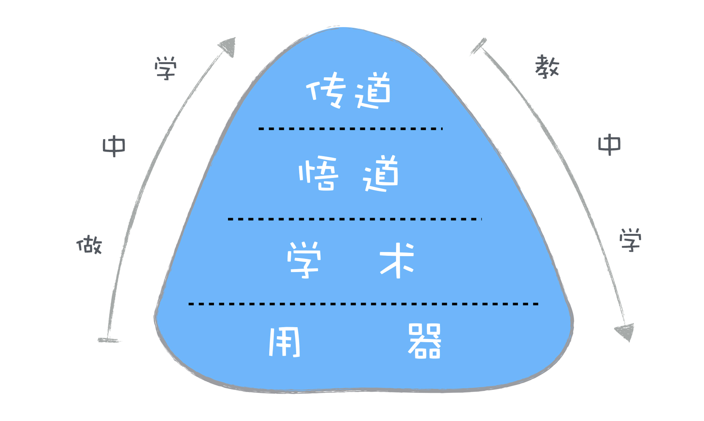

- 00 开篇词 你为什么应该学好软件工程？.md
- 01 到底应该怎样理解软件工程？.md
- 02 工程思维：把每件事都当作一个项目来推进.md
- 03 瀑布模型：像工厂流水线一样把软件开发分层化.md
- 04 瀑布模型之外，还有哪些开发模型？.md
- 05 敏捷开发到底是想解决什么问题？.md
- 06 大厂都在用哪些敏捷方法？（上）.md
- 07 大厂都在用哪些敏捷方法？（下）.md
- 08 怎样平衡软件质量与时间成本范围的关系？.md
- 09 为什么软件工程项目普遍不重视可行性分析？.md
- 10 如果你想技术转管理，先来试试管好一个项目.md
- 11 项目计划：代码未动，计划先行.md
- 12 流程和规范：红绿灯不是约束，而是用来提高效率.md
- 13 白天开会，加班写代码的节奏怎么破？.md
- 14 项目管理工具：一切管理问题，都应思考能否通过工具解决.md
- 15 风险管理：不能盲目乐观，凡事都应该有B计划.md
- 16 怎样才能写好项目文档？.md
- 17 需求分析到底要分析什么？怎么分析？.md
- 18 原型设计：如何用最小的代价完成产品特性？.md
- 19 作为程序员，你应该有产品意识.md
- 20 如何应对让人头疼的需求变更问题？.md
- 21 架构设计：普通程序员也能实现复杂系统？.md
- 22 如何为项目做好技术选型？.md
- 23 架构师：不想当架构师的程序员不是好程序员.md
- 24 技术债务：是继续修修补补凑合着用，还是推翻重来？.md
- 25 有哪些方法可以提高开发效率？.md
- 26 持续交付：如何做到随时发布新版本到生产环境？.md
- 27 软件工程师的核心竞争力是什么？（上）.md
- 28 软件工程师的核心竞争力是什么？（下）.md
- 29 自动化测试：如何把Bug杀死在摇篮里？.md
- 30 用好源代码管理工具，让你的协作更高效.md
- 31 软件测试要为产品质量负责吗？.md
- 32 软件测试：什么样的公司需要专职测试？.md
- 33 测试工具：为什么不应该通过QQ微信邮件报Bug？.md
- 34 账号密码泄露成灾，应该怎样预防？.md
- 35 版本发布：软件上线只是新的开始.md
- 36 DevOps工程师到底要做什么事情？.md
- 37 遇到线上故障，你和高手的差距在哪里？.md
- 38 日志管理：如何借助工具快速发现和定位产品问题 ？.md
- 39 项目总结：做好项目复盘，把经验变成能力.md
- 40 最佳实践：小团队如何应用软件工程？.md
- 41 为什么程序员的业余项目大多都死了？.md
- 42 反面案例：盘点那些失败的软件项目.md
- 43 以VS Code为例，看大型开源项目是如何应用软件工程的？.md
- 44 微软、谷歌、阿里巴巴等大厂是怎样应用软件工程的？.md
- 45 从软件工程的角度看微服务、云计算、人工智能这些新技术.md
- 一问一答第1期 30个软件开发常见问题解决策略.md
- 一问一答第2期 30个软件开发常见问题解决策略.md
- 一问一答第3期 18个软件开发常见问题解决策略.md
- 一问一答第4期 14个软件开发常见问题解决策略.md
- 一问一答第5期 22个软件开发常见问题解决策略.md
- 学习攻略 怎样学好软件工程？.md
- 特别放送 从软件工程的角度解读任正非的新年公开信.md
- 结束语 万事皆项目，软件工程无处不在.md
学习攻略 怎样学好软件工程？
你好，我是宝玉。
关于“什么是软件工程”和“为什么要学软件工程”，我在开篇词中已经简单介绍过了。总结来说：软件工程是软件行业知识体系的内核。无论你想走技术路线，还是转向做管理，想要走的更快更稳，那就绕不开软件工程。
在正式开始学习前，我们先来聊聊应该如何学习软件工程。你要先知道，软件工程学科的“知识树”结构是什么样的，才能更好地理解每个知识点和彼此间的联系。
软件工程知识架构全景图
首先你要明确，当我们谈软件工程学时，究竟在讲些什么呢？
在《软件工程——实践者的研究方法》这本经典软件工程教材中，作者 Roger S.Pressman 画了一张图，高度概括了整个软件工程的核心知识。

由图可见，“质量焦点”在最底层，这不难理解软件工程是为了应对软件危机诞生的学科，其目标就是为了要聚焦于质量，构建和维护高质量的软件。可以说，聚焦于质量就是软件工程的基石。
那“过程”指的是什么呢？
要构建高质量软件，则要解决软件过程中的混乱，将软件开发过程中的沟通、计划、建模、构建和部署等活动有效地组织起来。而软件过程，就是在软件项目的生命周期内，也就是软件从诞生到结束这期间，在开发与构建系统时要遵循的步骤。
有两种过程框架你一定经常听到，那就是瀑布模型和敏捷开发。这是在软件工程多年的发展中，逐步形成的两种主流的软件过程指导框架。
那么，何为“方法”？
方法是指在整个过程中，如何构建系统的方法学。比如说，如何分析用户需求；如何对产品进行测试验收；如何进行系统架构设计等。
知道了过程，掌握了方法，那么具体落到操作层面，就会涉及到工具的使用。
我们需要工具来辅助方法的执行，提高效率。通过工具，可以把一些手动的工作自动化，比如自动化测试工具，自动构建部署工具；通过工具，可以帮助把一些流程规范起来，比如 Bug 跟踪、源代码管理；还可以通过工具，帮助提高编码效率，比如各种编辑器 IDE、各种高级语言。
如果现在再回头总结一下，软件工程的核心知识点，就是围绕软件开发过程，产生的方法学和工具。
你可以用一个简单的公式来理解软件工程，那就是：软件工程 = 工具 + 方法 + 过程。
根据这个公式，我将软件工程的知识结构做成了思维导图，方便你对知识点有更好地理解，高效学习。

如何学习软件工程？
我给了你软件工程学的公式，也对软件工程有了更为全面的了解，看起来软件工程学很简单，但这些内容一下子要吃透也不容易。在开篇词中，我介绍了会从“道、术和器”三个维度去讲这个专栏，这其实对应了学习软件工程的四重境界。
学习软件工程的四重境界
第一重：用器
“器”就是工具，工具规则简单，上手就可以用，也很快就能看到效果。比如，原型设计工具可以帮助你确定需求，持续集成工具可以帮助你简化测试和部署的流程。对工具的学习是最为简单的，也是最基础的。
第二重：学术
“术”就是方法，学会方法，你就能应用方法去完成一个任务，例如用需求分析的方法，你去搞清楚用户想要什么，用 Scrum 去组织项目开发过程。
掌握了术，甚至是可以脱离器的，例如你没用原型设计工具，你用纸和笔，用白板，一样可以去沟通确认需求。
第三重：悟道
“道”就是本源，软件工程知识的核心思想和本质规律。就像敏捷开发，本身并不是一种方法，而是一套价值观和原则，领悟了这个道，就可以成为你在处理项目过程中各种问题决策的依据。道是可以产生术的，你掌握了敏捷开发的道，你就可以领悟出 Scrum、极限编程这样的术。
第四重： 传道
当你能把复杂的知识通过浅显易懂的方式传授给别人，那就说明你对知识的领悟已经到了更高的境界。同时，教学也是最好的学习方式，通过传授别人知识，可以让你对知识本身有更深入的理解。
做中学和教中学
你可能会问，怎样学，才能到达以上这四重境界？我在做技术管理的工作中，经常要做一些培训的工作，在这过程中我总结了两套行之有效的方法：“做中学”和“教中学”。

“做中学”，是一种自下而上的学习方法，通过实践，从使用工具到学习方法，再从方法中提炼出道。
在学习本专栏的时候，你可以采用“做中学”的方式，把专栏中的知识应用起来，在实践的过程中去巩固你学到的知识，去思考背后的道。把已经积累的项目经验和软件工程的知识点关联起来，这样才能加深你的理解，学以致用，把经验和知识转化为能力。
“教中学”，是一种自上而下的学习方法，通过教学，去进一步深入领会别人总结出来的道，去模仿推导方法，去学习如何使用工具。
比如，你学习完一篇专栏文章后，把学到的知识进行输出，写成微博或博客分享出去；在公司内部讲给你的同事们听等。在教学分享的过程中，去进一步深化吸收知识内容，构建你的知识体系。
“做中学”和“教中学”，这两种方法你可以配合起来使用。
参考书目
另外，在学习软件工程的过程中，我看过一些不错的相关书籍，在这里列个书单，供大家参考。
- 《构建之法》
作者邹欣是微软的研发总监，同时在多所高校进行了软件工程的教学实践，在此基础上对软件工程的各个知识点和技能要求进行了系统性整理，形成教材。也是对本专栏知识很好的补充。
- 《人月神话》
这是软件工程历史上的经典著作，内容发人深省，40 年来一直畅销不衰，里面的观点即使到现在也不过时。这本书即使你以前看过，隔一段时间再翻看一遍，可能都会有新的感悟。
- 《人件》
如果说《人月神话》关注“软件开发”本身，《人件》则关注软件开发中的“人”。作者指出知识型企业的核心是人，而不是技术。
- 《知行合一： 实现价值驱动的敏捷和精益开发》
作者丛斌有二十多年从事软件工程教学、咨询和研究的经验，所以书写的特别接地气，文章有很多真实案例，对敏捷开发和 CMMI 都有很深入描述。
- 《软件工程——实践者的研究方法》
这是大部分高校采用的软件工程标准教材，可以作为一个参考。
- 《持续交付》
讲述如何实现更快、更可靠、低成本的自动化软件交付，描述了如何通过增加反馈，并改进开发人员、测试人员、运维人员和项目经理之间的协作来达到这个目标。
- 《走出软件作坊》
这本书生动的描述了国内小型 IT 企业在发展过程中遇到的一系列项目管理问题，以及作者是如何去解决这些问题的。
总结
今天，我带你浏览了软件工程的全景图，也为你讲解了学习软件工程的四重境界。同时，我也介绍了“做中学”和“教中学”这两套行之有效，并且特别适合软件工程学科的学习方法，所以希望你在后面的学习中，可以付诸行动。
分享你学到的知识。将你从专栏学习到的知识写成微博或博客等，分享给大家。写作是一种特别好的总结和学习方式，在你写的过程中，很多不清楚的问题就想明白了。
做几次内部分享或培训。如果你从来没做过公司内部的分享或培训，不妨迈出第一步，把你学到的知识，写成 PPT，小范围地讲给你的同事或朋友。如果你已经做过类似的分享，那么就再做几次软件工程相关的。准备 PPT 的过程，就是你最好的学习过程。
把你学习的知识应用起来。学到的知识只有用起来才能变成你自己的经验，尝试着把在专栏中学到的知识应用到你的项目中去。多问多思考。有疑问就提出来；看到其他人问的问题，也可以去思考为什么，一起探讨问题的答案。
感谢阅读，如果你觉得这篇文章对你有一些启发，也欢迎把它分享给你的朋友。
© 2019 - 2023 Liangliang Lee. Powered by gin and hexo-theme-book.